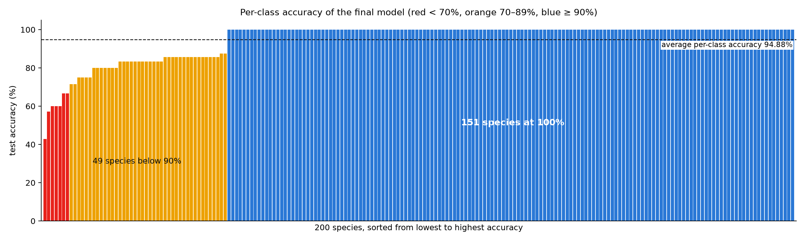

Test set: 1,204 images (4–8 per species). Average per-class accuracy 94.88%. 100%: 151 species · 90-99%: 0 species · 70-89%: 42 species · below 70%: 7 species. Rows: red = below 70%, yellow = 70–89%. Sorted worst first.

| # | Species | Test images | Correct | Accuracy % | Precision % | Recall % | F1 % | Baseline ResNet-50 acc % | Mistaken for |
|---|---|---|---|---|---|---|---|---|---|
| 1 | Common Tern | 7 | 3 | 42.9 | 75.0 | 42.9 | 54.5 | 14.3 | Artic Tern ×2, Forsters Tern ×1 |
| 2 | Acadian Flycatcher | 7 | 4 | 57.1 | 80.0 | 57.1 | 66.7 | 100.0 | Least Flycatcher ×3 |
| 3 | American Crow | 5 | 3 | 60.0 | 60.0 | 60.0 | 60.0 | 20.0 | Fish Crow ×2 |
| 4 | Ring billed Gull | 5 | 3 | 60.0 | 60.0 | 60.0 | 60.0 | 80.0 | Herring Gull ×2 |
| 5 | California Gull | 5 | 3 | 60.0 | 100.0 | 60.0 | 75.0 | 60.0 | Ring billed Gull ×2 |
| 6 | Fish Crow | 6 | 4 | 66.7 | 66.7 | 66.7 | 66.7 | 50.0 | American Crow ×2 |
| 7 | Olive sided Flycatcher | 6 | 4 | 66.7 | 100.0 | 66.7 | 80.0 | 66.7 | Western Wood Pewee ×2 |
| 8 | Henslow Sparrow | 7 | 5 | 71.4 | 100.0 | 71.4 | 83.3 | 57.1 | Savannah Sparrow ×1, Seaside Sparrow ×1 |
| 9 | Yellow bellied Flycatcher | 7 | 5 | 71.4 | 100.0 | 71.4 | 83.3 | 57.1 | Myrtle Warbler ×1, Great Crested Flycatcher ×1 |
| 10 | Chuck will Widow | 4 | 3 | 75.0 | 75.0 | 75.0 | 75.0 | 50.0 | Whip poor Will ×1 |
| 11 | Whip poor Will | 4 | 3 | 75.0 | 75.0 | 75.0 | 75.0 | 50.0 | Chuck will Widow ×1 |
| 12 | Red cockaded Woodpecker | 4 | 3 | 75.0 | 100.0 | 75.0 | 85.7 | 75.0 | Downy Woodpecker ×1 |
| 13 | Red faced Cormorant | 4 | 3 | 75.0 | 100.0 | 75.0 | 85.7 | 50.0 | Brandt Cormorant ×1 |
| 14 | American Goldfinch | 5 | 4 | 80.0 | 80.0 | 80.0 | 80.0 | 80.0 | Indigo Bunting ×1 |
| 15 | Brandt Cormorant | 5 | 4 | 80.0 | 80.0 | 80.0 | 80.0 | 60.0 | Pelagic Cormorant ×1 |
| 16 | Elegant Tern | 5 | 4 | 80.0 | 80.0 | 80.0 | 80.0 | 60.0 | Common Tern ×1 |
| 17 | Bank Swallow | 5 | 4 | 80.0 | 100.0 | 80.0 | 88.9 | 40.0 | Barn Swallow ×1 |
| 18 | Brewer Blackbird | 5 | 4 | 80.0 | 100.0 | 80.0 | 88.9 | 80.0 | Bronzed Cowbird ×1 |
| 19 | Ruby throated Hummingbird | 5 | 4 | 80.0 | 100.0 | 80.0 | 88.9 | 80.0 | Anna Hummingbird ×1 |
| 20 | Sayornis | 5 | 4 | 80.0 | 100.0 | 80.0 | 88.9 | 60.0 | Least Flycatcher ×1 |
| 21 | Least Flycatcher | 6 | 5 | 83.3 | 50.0 | 83.3 | 62.5 | 50.0 | Acadian Flycatcher ×1 |
| 22 | Tennessee Warbler | 6 | 5 | 83.3 | 71.4 | 83.3 | 76.9 | 50.0 | Mangrove Cuckoo ×1 |
| 23 | Chipping Sparrow | 6 | 5 | 83.3 | 83.3 | 83.3 | 83.3 | 50.0 | Grasshopper Sparrow ×1 |
| 24 | Great Grey Shrike | 6 | 5 | 83.3 | 83.3 | 83.3 | 83.3 | 83.3 | Loggerhead Shrike ×1 |
| 25 | Orange crowned Warbler | 6 | 5 | 83.3 | 83.3 | 83.3 | 83.3 | 66.7 | Yellow Warbler ×1 |
| 26 | Field Sparrow | 6 | 5 | 83.3 | 100.0 | 83.3 | 90.9 | 83.3 | Chipping Sparrow ×1 |
| 27 | Horned Grebe | 6 | 5 | 83.3 | 100.0 | 83.3 | 90.9 | 83.3 | Eared Grebe ×1 |
| 28 | Marsh Wren | 6 | 5 | 83.3 | 100.0 | 83.3 | 90.9 | 83.3 | Winter Wren ×1 |
| 29 | Palm Warbler | 6 | 5 | 83.3 | 100.0 | 83.3 | 90.9 | 83.3 | Cape May Warbler ×1 |
| 30 | Purple Finch | 6 | 5 | 83.3 | 100.0 | 83.3 | 90.9 | 66.7 | American Goldfinch ×1 |
| 31 | Western Gull | 6 | 5 | 83.3 | 100.0 | 83.3 | 90.9 | 66.7 | Glaucous winged Gull ×1 |
| 32 | White necked Raven | 6 | 5 | 83.3 | 100.0 | 83.3 | 90.9 | 100.0 | Common Raven ×1 |
| 33 | Western Wood Pewee | 7 | 6 | 85.7 | 75.0 | 85.7 | 80.0 | 71.4 | Least Flycatcher ×1 |
| 34 | Cape May Warbler | 7 | 6 | 85.7 | 85.7 | 85.7 | 85.7 | 71.4 | Tennessee Warbler ×1 |
| 35 | Glaucous winged Gull | 7 | 6 | 85.7 | 85.7 | 85.7 | 85.7 | 42.9 | Slaty backed Gull ×1 |
| 36 | Grasshopper Sparrow | 7 | 6 | 85.7 | 85.7 | 85.7 | 85.7 | 85.7 | Lincoln Sparrow ×1 |
| 37 | Loggerhead Shrike | 7 | 6 | 85.7 | 85.7 | 85.7 | 85.7 | 71.4 | Great Grey Shrike ×1 |
| 38 | Baird Sparrow | 7 | 6 | 85.7 | 100.0 | 85.7 | 92.3 | 85.7 | Savannah Sparrow ×1 |
| 39 | Black and white Warbler | 7 | 6 | 85.7 | 100.0 | 85.7 | 92.3 | 71.4 | Cerulean Warbler ×1 |
| 40 | Black billed Cuckoo | 7 | 6 | 85.7 | 100.0 | 85.7 | 92.3 | 71.4 | Gray Kingbird ×1 |
| 41 | Black footed Albatross | 7 | 6 | 85.7 | 100.0 | 85.7 | 92.3 | 71.4 | Sooty Albatross ×1 |
| 42 | Brewer Sparrow | 7 | 6 | 85.7 | 100.0 | 85.7 | 92.3 | 71.4 | Savannah Sparrow ×1 |
| 43 | Fox Sparrow | 7 | 6 | 85.7 | 100.0 | 85.7 | 92.3 | 71.4 | Savannah Sparrow ×1 |
| 44 | Mourning Warbler | 7 | 6 | 85.7 | 100.0 | 85.7 | 92.3 | 57.1 | Nashville Warbler ×1 |
| 45 | Orchard Oriole | 7 | 6 | 85.7 | 100.0 | 85.7 | 92.3 | 71.4 | Baltimore Oriole ×1 |
| 46 | Prairie Warbler | 7 | 6 | 85.7 | 100.0 | 85.7 | 92.3 | 71.4 | Orange crowned Warbler ×1 |
| 47 | Red eyed Vireo | 7 | 6 | 85.7 | 100.0 | 85.7 | 92.3 | 57.1 | Tennessee Warbler ×1 |
| 48 | Downy Woodpecker | 8 | 7 | 87.5 | 87.5 | 87.5 | 87.5 | 87.5 | Cardinal ×1 |
| 49 | Song Sparrow | 8 | 7 | 87.5 | 100.0 | 87.5 | 93.3 | 75.0 | Savannah Sparrow ×1 |
| 50 | Savannah Sparrow | 7 | 7 | 100.0 | 58.3 | 100.0 | 73.7 | 71.4 | |
| 51 | Herring Gull | 5 | 5 | 100.0 | 71.4 | 100.0 | 83.3 | 80.0 | |
| 52 | Artic Tern | 7 | 7 | 100.0 | 77.8 | 100.0 | 87.5 | 42.9 | |
| 53 | Myrtle Warbler | 4 | 4 | 100.0 | 80.0 | 100.0 | 88.9 | 75.0 | |
| 54 | Yellow Warbler | 4 | 4 | 100.0 | 80.0 | 100.0 | 88.9 | 100.0 | |
| 55 | Anna Hummingbird | 5 | 5 | 100.0 | 83.3 | 100.0 | 90.9 | 100.0 | |
| 56 | Baltimore Oriole | 5 | 5 | 100.0 | 83.3 | 100.0 | 90.9 | 100.0 | |
| 57 | Barn Swallow | 5 | 5 | 100.0 | 83.3 | 100.0 | 90.9 | 60.0 | |
| 58 | Bronzed Cowbird | 5 | 5 | 100.0 | 83.3 | 100.0 | 90.9 | 80.0 | |
| 59 | Cardinal | 5 | 5 | 100.0 | 83.3 | 100.0 | 90.9 | 100.0 | |
| 60 | Cerulean Warbler | 5 | 5 | 100.0 | 83.3 | 100.0 | 90.9 | 60.0 | |
| 61 | Common Raven | 5 | 5 | 100.0 | 83.3 | 100.0 | 90.9 | 80.0 | |
| 62 | Forsters Tern | 5 | 5 | 100.0 | 83.3 | 100.0 | 90.9 | 80.0 | |
| 63 | Seaside Sparrow | 5 | 5 | 100.0 | 83.3 | 100.0 | 90.9 | 80.0 | |
| 64 | Sooty Albatross | 5 | 5 | 100.0 | 83.3 | 100.0 | 90.9 | 80.0 | |
| 65 | Mangrove Cuckoo | 6 | 6 | 100.0 | 85.7 | 100.0 | 92.3 | 83.3 | |
| 66 | Nashville Warbler | 6 | 6 | 100.0 | 85.7 | 100.0 | 92.3 | 83.3 | |
| 67 | Pelagic Cormorant | 6 | 6 | 100.0 | 85.7 | 100.0 | 92.3 | 83.3 | |
| 68 | Slaty backed Gull | 6 | 6 | 100.0 | 85.7 | 100.0 | 92.3 | 66.7 | |
| 69 | Eared Grebe | 7 | 7 | 100.0 | 87.5 | 100.0 | 93.3 | 100.0 | |
| 70 | Gray Kingbird | 7 | 7 | 100.0 | 87.5 | 100.0 | 93.3 | 85.7 | |
| 71 | Great Crested Flycatcher | 7 | 7 | 100.0 | 87.5 | 100.0 | 93.3 | 71.4 | |
| 72 | Indigo Bunting | 7 | 7 | 100.0 | 87.5 | 100.0 | 93.3 | 85.7 | |
| 73 | Lincoln Sparrow | 7 | 7 | 100.0 | 87.5 | 100.0 | 93.3 | 100.0 | |
| 74 | Winter Wren | 7 | 7 | 100.0 | 87.5 | 100.0 | 93.3 | 85.7 | |
| 75 | American Pipit | 6 | 6 | 100.0 | 100.0 | 100.0 | 100.0 | 83.3 | |
| 76 | American Redstart | 6 | 6 | 100.0 | 100.0 | 100.0 | 100.0 | 66.7 | |
| 77 | American Three toed Woodpecker | 6 | 6 | 100.0 | 100.0 | 100.0 | 100.0 | 66.7 | |
| 78 | Bay breasted Warbler | 6 | 6 | 100.0 | 100.0 | 100.0 | 100.0 | 100.0 | |
| 79 | Belted Kingfisher | 6 | 6 | 100.0 | 100.0 | 100.0 | 100.0 | 66.7 | |
| 80 | Bewick Wren | 7 | 7 | 100.0 | 100.0 | 100.0 | 100.0 | 71.4 | |
| 81 | Black Tern | 4 | 4 | 100.0 | 100.0 | 100.0 | 100.0 | 100.0 | |
| 82 | Black capped Vireo | 5 | 5 | 100.0 | 100.0 | 100.0 | 100.0 | 80.0 | |
| 83 | Black throated Blue Warbler | 4 | 4 | 100.0 | 100.0 | 100.0 | 100.0 | 50.0 | |
| 84 | Black throated Sparrow | 7 | 7 | 100.0 | 100.0 | 100.0 | 100.0 | 100.0 | |
| 85 | Blue Grosbeak | 6 | 6 | 100.0 | 100.0 | 100.0 | 100.0 | 100.0 | |
| 86 | Blue Jay | 7 | 7 | 100.0 | 100.0 | 100.0 | 100.0 | 100.0 | |
| 87 | Blue headed Vireo | 7 | 7 | 100.0 | 100.0 | 100.0 | 100.0 | 100.0 | |
| 88 | Blue winged Warbler | 7 | 7 | 100.0 | 100.0 | 100.0 | 100.0 | 100.0 | |
| 89 | Boat tailed Grackle | 7 | 7 | 100.0 | 100.0 | 100.0 | 100.0 | 42.9 | |
| 90 | Bobolink | 5 | 5 | 100.0 | 100.0 | 100.0 | 100.0 | 100.0 | |
| 91 | Bohemian Waxwing | 7 | 7 | 100.0 | 100.0 | 100.0 | 100.0 | 42.9 | |
| 92 | Brown Creeper | 7 | 7 | 100.0 | 100.0 | 100.0 | 100.0 | 100.0 | |
| 93 | Brown Pelican | 6 | 6 | 100.0 | 100.0 | 100.0 | 100.0 | 100.0 | |
| 94 | Brown Thrasher | 6 | 6 | 100.0 | 100.0 | 100.0 | 100.0 | 100.0 | |
| 95 | Cactus Wren | 5 | 5 | 100.0 | 100.0 | 100.0 | 100.0 | 40.0 | |
| 96 | Canada Warbler | 7 | 7 | 100.0 | 100.0 | 100.0 | 100.0 | 100.0 | |
| 97 | Cape Glossy Starling | 7 | 7 | 100.0 | 100.0 | 100.0 | 100.0 | 100.0 | |
| 98 | Carolina Wren | 7 | 7 | 100.0 | 100.0 | 100.0 | 100.0 | 85.7 | |
| 99 | Caspian Tern | 8 | 8 | 100.0 | 100.0 | 100.0 | 100.0 | 75.0 | |
| 100 | Cedar Waxwing | 7 | 7 | 100.0 | 100.0 | 100.0 | 100.0 | 85.7 | |
| 101 | Chestnut sided Warbler | 6 | 6 | 100.0 | 100.0 | 100.0 | 100.0 | 100.0 | |
| 102 | Clark Nutcracker | 7 | 7 | 100.0 | 100.0 | 100.0 | 100.0 | 100.0 | |
| 103 | Clay colored Sparrow | 7 | 7 | 100.0 | 100.0 | 100.0 | 100.0 | 71.4 | |
| 104 | Cliff Swallow | 6 | 6 | 100.0 | 100.0 | 100.0 | 100.0 | 100.0 | |
| 105 | Common Yellowthroat | 5 | 5 | 100.0 | 100.0 | 100.0 | 100.0 | 100.0 | |
| 106 | Crested Auklet | 5 | 5 | 100.0 | 100.0 | 100.0 | 100.0 | 100.0 | |
| 107 | Dark eyed Junco | 5 | 5 | 100.0 | 100.0 | 100.0 | 100.0 | 100.0 | |
| 108 | Eastern Towhee | 6 | 6 | 100.0 | 100.0 | 100.0 | 100.0 | 66.7 | |
| 109 | European Goldfinch | 7 | 7 | 100.0 | 100.0 | 100.0 | 100.0 | 85.7 | |
| 110 | Evening Grosbeak | 5 | 5 | 100.0 | 100.0 | 100.0 | 100.0 | 80.0 | |
| 111 | Florida Jay | 7 | 7 | 100.0 | 100.0 | 100.0 | 100.0 | 100.0 | |
| 112 | Frigatebird | 4 | 4 | 100.0 | 100.0 | 100.0 | 100.0 | 75.0 | |
| 113 | Gadwall | 7 | 7 | 100.0 | 100.0 | 100.0 | 100.0 | 71.4 | |
| 114 | Geococcyx | 5 | 5 | 100.0 | 100.0 | 100.0 | 100.0 | 100.0 | |
| 115 | Golden winged Warbler | 7 | 7 | 100.0 | 100.0 | 100.0 | 100.0 | 100.0 | |
| 116 | Gray Catbird | 7 | 7 | 100.0 | 100.0 | 100.0 | 100.0 | 100.0 | |
| 117 | Gray crowned Rosy Finch | 5 | 5 | 100.0 | 100.0 | 100.0 | 100.0 | 80.0 | |
| 118 | Green Jay | 7 | 7 | 100.0 | 100.0 | 100.0 | 100.0 | 100.0 | |
| 119 | Green Kingfisher | 5 | 5 | 100.0 | 100.0 | 100.0 | 100.0 | 100.0 | |
| 120 | Green Violetear | 6 | 6 | 100.0 | 100.0 | 100.0 | 100.0 | 100.0 | |
| 121 | Green tailed Towhee | 7 | 7 | 100.0 | 100.0 | 100.0 | 100.0 | 100.0 | |
| 122 | Groove billed Ani | 7 | 7 | 100.0 | 100.0 | 100.0 | 100.0 | 100.0 | |
| 123 | Harris Sparrow | 5 | 5 | 100.0 | 100.0 | 100.0 | 100.0 | 80.0 | |
| 124 | Heermann Gull | 5 | 5 | 100.0 | 100.0 | 100.0 | 100.0 | 80.0 | |
| 125 | Hooded Merganser | 7 | 7 | 100.0 | 100.0 | 100.0 | 100.0 | 100.0 | |
| 126 | Hooded Oriole | 7 | 7 | 100.0 | 100.0 | 100.0 | 100.0 | 57.1 | |
| 127 | Hooded Warbler | 5 | 5 | 100.0 | 100.0 | 100.0 | 100.0 | 100.0 | |
| 128 | Horned Lark | 6 | 6 | 100.0 | 100.0 | 100.0 | 100.0 | 100.0 | |
| 129 | Horned Puffin | 6 | 6 | 100.0 | 100.0 | 100.0 | 100.0 | 100.0 | |
| 130 | House Sparrow | 6 | 6 | 100.0 | 100.0 | 100.0 | 100.0 | 100.0 | |
| 131 | House Wren | 5 | 5 | 100.0 | 100.0 | 100.0 | 100.0 | 60.0 | |
| 132 | Ivory Gull | 4 | 4 | 100.0 | 100.0 | 100.0 | 100.0 | 100.0 | |
| 133 | Kentucky Warbler | 6 | 6 | 100.0 | 100.0 | 100.0 | 100.0 | 83.3 | |
| 134 | Laysan Albatross | 5 | 5 | 100.0 | 100.0 | 100.0 | 100.0 | 100.0 | |
| 135 | Lazuli Bunting | 6 | 6 | 100.0 | 100.0 | 100.0 | 100.0 | 66.7 | |
| 136 | Le Conte Sparrow | 7 | 7 | 100.0 | 100.0 | 100.0 | 100.0 | 100.0 | |
| 137 | Least Auklet | 6 | 6 | 100.0 | 100.0 | 100.0 | 100.0 | 100.0 | |
| 138 | Least Tern | 5 | 5 | 100.0 | 100.0 | 100.0 | 100.0 | 60.0 | |
| 139 | Long tailed Jaeger | 6 | 6 | 100.0 | 100.0 | 100.0 | 100.0 | 66.7 | |
| 140 | Louisiana Waterthrush | 6 | 6 | 100.0 | 100.0 | 100.0 | 100.0 | 50.0 | |
| 141 | Magnolia Warbler | 5 | 5 | 100.0 | 100.0 | 100.0 | 100.0 | 80.0 | |
| 142 | Mallard | 5 | 5 | 100.0 | 100.0 | 100.0 | 100.0 | 100.0 | |
| 143 | Mockingbird | 6 | 6 | 100.0 | 100.0 | 100.0 | 100.0 | 50.0 | |
| 144 | Nelson Sharp tailed Sparrow | 6 | 6 | 100.0 | 100.0 | 100.0 | 100.0 | 100.0 | |
| 145 | Nighthawk | 6 | 6 | 100.0 | 100.0 | 100.0 | 100.0 | 100.0 | |
| 146 | Northern Flicker | 8 | 8 | 100.0 | 100.0 | 100.0 | 100.0 | 100.0 | |
| 147 | Northern Fulmar | 6 | 6 | 100.0 | 100.0 | 100.0 | 100.0 | 83.3 | |
| 148 | Northern Waterthrush | 7 | 7 | 100.0 | 100.0 | 100.0 | 100.0 | 100.0 | |
| 149 | Ovenbird | 6 | 6 | 100.0 | 100.0 | 100.0 | 100.0 | 100.0 | |
| 150 | Pacific Loon | 7 | 7 | 100.0 | 100.0 | 100.0 | 100.0 | 100.0 | |
| 151 | Painted Bunting | 6 | 6 | 100.0 | 100.0 | 100.0 | 100.0 | 100.0 | |
| 152 | Parakeet Auklet | 7 | 7 | 100.0 | 100.0 | 100.0 | 100.0 | 100.0 | |
| 153 | Philadelphia Vireo | 7 | 7 | 100.0 | 100.0 | 100.0 | 100.0 | 85.7 | |
| 154 | Pied Kingfisher | 7 | 7 | 100.0 | 100.0 | 100.0 | 100.0 | 100.0 | |
| 155 | Pied billed Grebe | 6 | 6 | 100.0 | 100.0 | 100.0 | 100.0 | 100.0 | |
| 156 | Pigeon Guillemot | 5 | 5 | 100.0 | 100.0 | 100.0 | 100.0 | 80.0 | |
| 157 | Pileated Woodpecker | 8 | 8 | 100.0 | 100.0 | 100.0 | 100.0 | 100.0 | |
| 158 | Pine Grosbeak | 4 | 4 | 100.0 | 100.0 | 100.0 | 100.0 | 100.0 | |
| 159 | Pine Warbler | 6 | 6 | 100.0 | 100.0 | 100.0 | 100.0 | 100.0 | |
| 160 | Pomarine Jaeger | 6 | 6 | 100.0 | 100.0 | 100.0 | 100.0 | 83.3 | |
| 161 | Prothonotary Warbler | 7 | 7 | 100.0 | 100.0 | 100.0 | 100.0 | 100.0 | |
| 162 | Red bellied Woodpecker | 7 | 7 | 100.0 | 100.0 | 100.0 | 100.0 | 85.7 | |
| 163 | Red breasted Merganser | 6 | 6 | 100.0 | 100.0 | 100.0 | 100.0 | 100.0 | |
| 164 | Red headed Woodpecker | 6 | 6 | 100.0 | 100.0 | 100.0 | 100.0 | 83.3 | |
| 165 | Red legged Kittiwake | 4 | 4 | 100.0 | 100.0 | 100.0 | 100.0 | 100.0 | |
| 166 | Red winged Blackbird | 5 | 5 | 100.0 | 100.0 | 100.0 | 100.0 | 80.0 | |
| 167 | Rhinoceros Auklet | 6 | 6 | 100.0 | 100.0 | 100.0 | 100.0 | 100.0 | |
| 168 | Ringed Kingfisher | 7 | 7 | 100.0 | 100.0 | 100.0 | 100.0 | 85.7 | |
| 169 | Rock Wren | 5 | 5 | 100.0 | 100.0 | 100.0 | 100.0 | 60.0 | |
| 170 | Rose breasted Grosbeak | 4 | 4 | 100.0 | 100.0 | 100.0 | 100.0 | 100.0 | |
| 171 | Rufous Hummingbird | 7 | 7 | 100.0 | 100.0 | 100.0 | 100.0 | 100.0 | |
| 172 | Rusty Blackbird | 5 | 5 | 100.0 | 100.0 | 100.0 | 100.0 | 80.0 | |
| 173 | Sage Thrasher | 5 | 5 | 100.0 | 100.0 | 100.0 | 100.0 | 100.0 | |
| 174 | Scarlet Tanager | 5 | 5 | 100.0 | 100.0 | 100.0 | 100.0 | 100.0 | |
| 175 | Scissor tailed Flycatcher | 7 | 7 | 100.0 | 100.0 | 100.0 | 100.0 | 100.0 | |
| 176 | Scott Oriole | 6 | 6 | 100.0 | 100.0 | 100.0 | 100.0 | 83.3 | |
| 177 | Shiny Cowbird | 6 | 6 | 100.0 | 100.0 | 100.0 | 100.0 | 100.0 | |
| 178 | Spotted Catbird | 4 | 4 | 100.0 | 100.0 | 100.0 | 100.0 | 100.0 | |
| 179 | Summer Tanager | 4 | 4 | 100.0 | 100.0 | 100.0 | 100.0 | 100.0 | |
| 180 | Swainson Warbler | 5 | 5 | 100.0 | 100.0 | 100.0 | 100.0 | 100.0 | |
| 181 | Tree Sparrow | 4 | 4 | 100.0 | 100.0 | 100.0 | 100.0 | 75.0 | |
| 182 | Tree Swallow | 7 | 7 | 100.0 | 100.0 | 100.0 | 100.0 | 71.4 | |
| 183 | Tropical Kingbird | 7 | 7 | 100.0 | 100.0 | 100.0 | 100.0 | 85.7 | |
| 184 | Vermilion Flycatcher | 5 | 5 | 100.0 | 100.0 | 100.0 | 100.0 | 100.0 | |
| 185 | Vesper Sparrow | 8 | 8 | 100.0 | 100.0 | 100.0 | 100.0 | 75.0 | |
| 186 | Warbling Vireo | 7 | 7 | 100.0 | 100.0 | 100.0 | 100.0 | 85.7 | |
| 187 | Western Grebe | 7 | 7 | 100.0 | 100.0 | 100.0 | 100.0 | 100.0 | |
| 188 | Western Meadowlark | 6 | 6 | 100.0 | 100.0 | 100.0 | 100.0 | 100.0 | |
| 189 | White Pelican | 5 | 5 | 100.0 | 100.0 | 100.0 | 100.0 | 100.0 | |
| 190 | White breasted Kingfisher | 7 | 7 | 100.0 | 100.0 | 100.0 | 100.0 | 100.0 | |
| 191 | White breasted Nuthatch | 7 | 7 | 100.0 | 100.0 | 100.0 | 100.0 | 85.7 | |
| 192 | White crowned Sparrow | 5 | 5 | 100.0 | 100.0 | 100.0 | 100.0 | 60.0 | |
| 193 | White eyed Vireo | 7 | 7 | 100.0 | 100.0 | 100.0 | 100.0 | 85.7 | |
| 194 | White throated Sparrow | 7 | 7 | 100.0 | 100.0 | 100.0 | 100.0 | 100.0 | |
| 195 | Wilson Warbler | 7 | 7 | 100.0 | 100.0 | 100.0 | 100.0 | 57.1 | |
| 196 | Worm eating Warbler | 6 | 6 | 100.0 | 100.0 | 100.0 | 100.0 | 66.7 | |
| 197 | Yellow billed Cuckoo | 7 | 7 | 100.0 | 100.0 | 100.0 | 100.0 | 57.1 | |
| 198 | Yellow breasted Chat | 7 | 7 | 100.0 | 100.0 | 100.0 | 100.0 | 100.0 | |
| 199 | Yellow headed Blackbird | 6 | 6 | 100.0 | 100.0 | 100.0 | 100.0 | 100.0 | |
| 200 | Yellow throated Vireo | 6 | 6 | 100.0 | 100.0 | 100.0 | 100.0 | 66.7 |